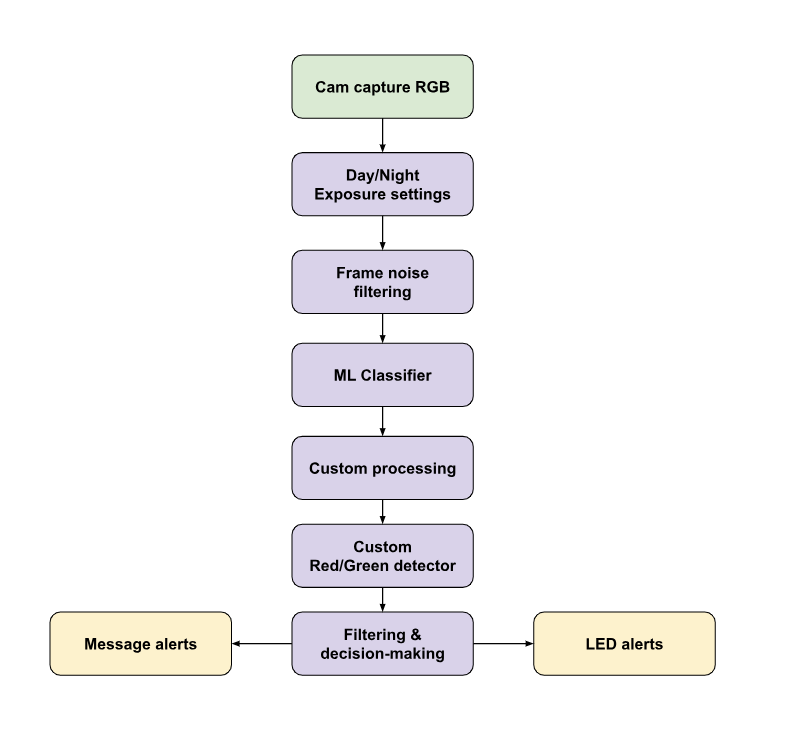
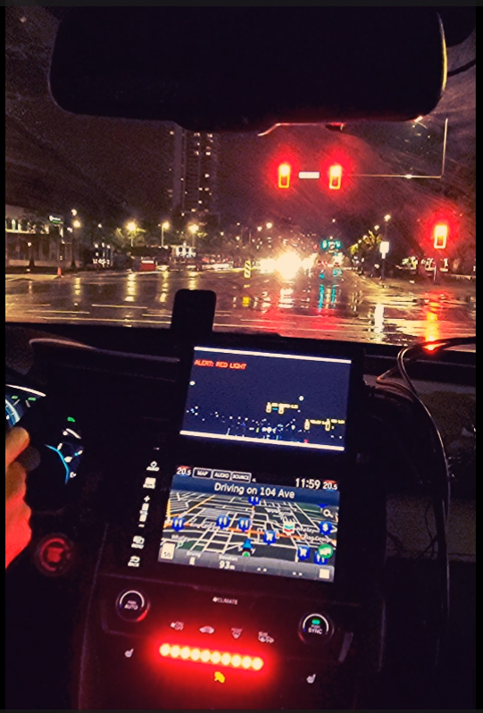
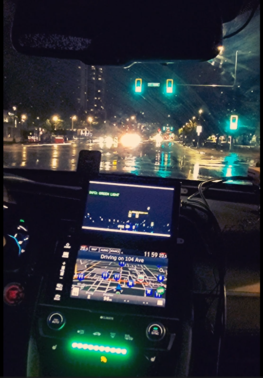
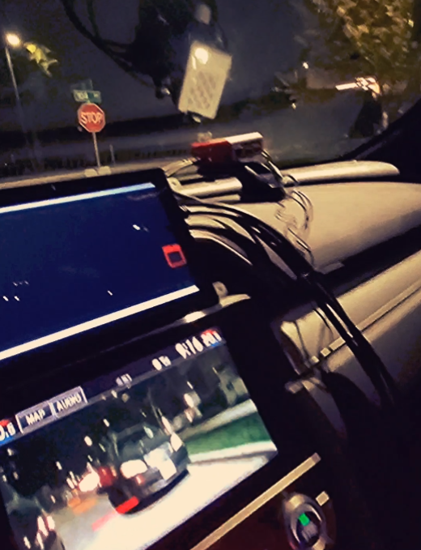
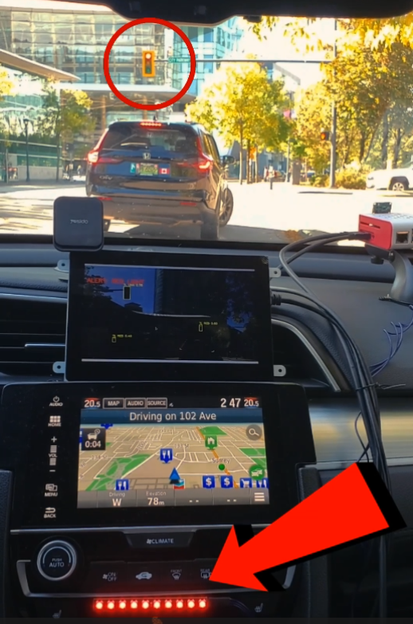
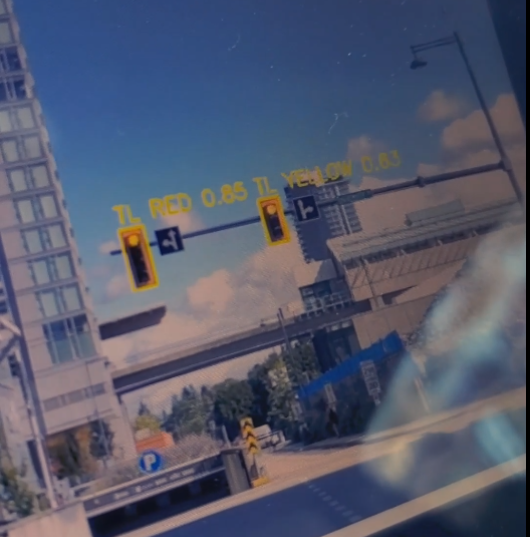
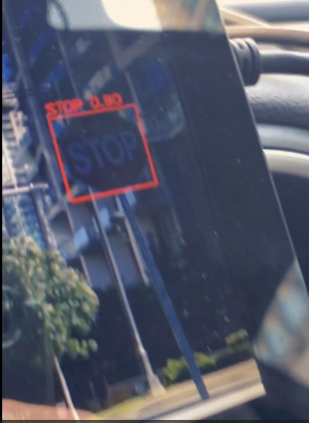

01 / PERSONAL PROJECT
Driver Assist
System.
A computer-vision prototype that detects stop signs and traffic lights, interprets signal colour, and provides on-screen and LED feedback.
Watch the video ↗THE IDEA
Turn visual cues
into useful feedback.
The system connects camera input, object detection, colour analysis, and physical alerts in a single application. It supports Raspberry Pi camera capture or video-file input, with annotated frames streamed to a browser.
My implementation combines a pretrained YOLOv8n detector with a custom HSV-based traffic-light classifier. Consecutive-frame checks and a cooldown are used in the alert logic to reduce repeated triggers.
SOFTWARE ARCHITECTURE
From frame
to decision.
- Capture
Read camera frames or a recorded video.
- Detect
Use YOLOv8n to locate traffic lights and stop signs.
- Interpret
Analyse traffic-light regions using HSV masks, glare suppression, morphological filtering, and position-aware colour checks.
- Respond
Apply temporal filtering, annotate the stream, and trigger LED feedback.

In the prototype
OBSERVATIONS & DEMONSTRATIONS


More project images



What this project explores
Combining learned object detection with explicit image-processing rules, connecting inference to hardware feedback, and presenting detections through a lightweight browser stream.
Personal prototype. The supplied material does not establish detection accuracy, latency benchmarks, or validation for road-safety use.